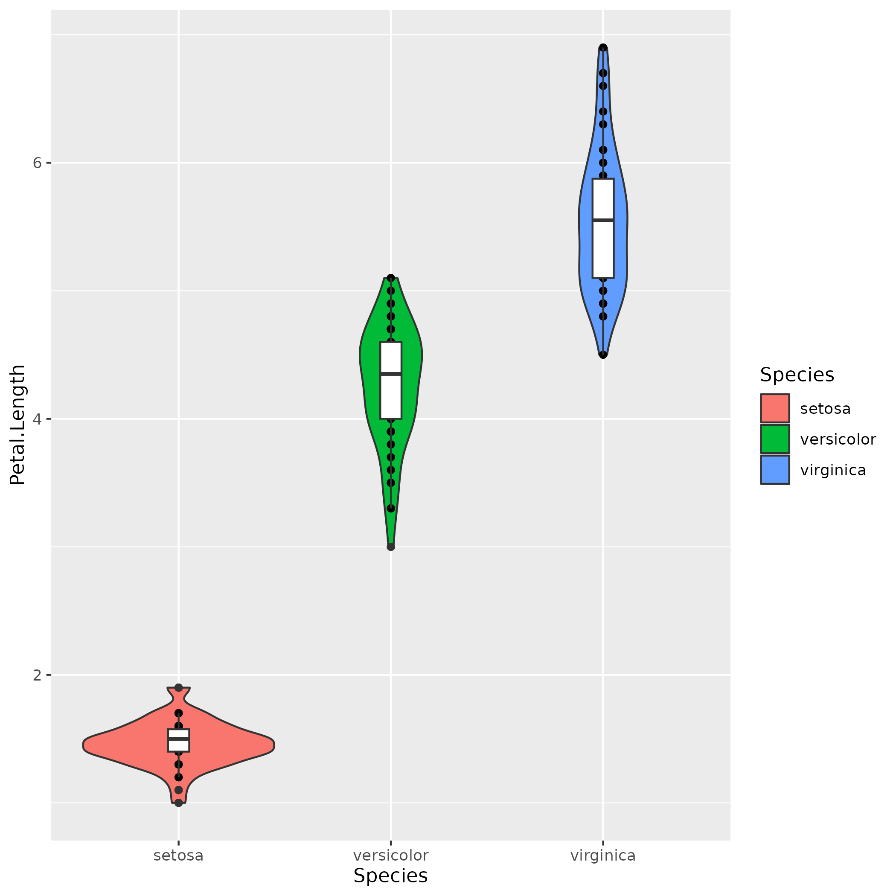
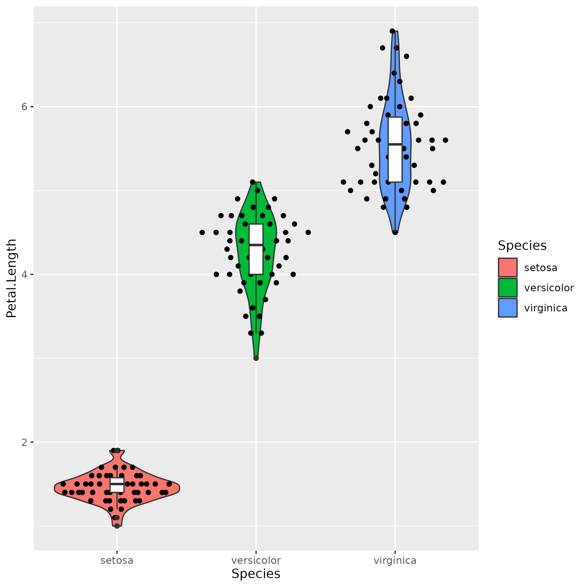
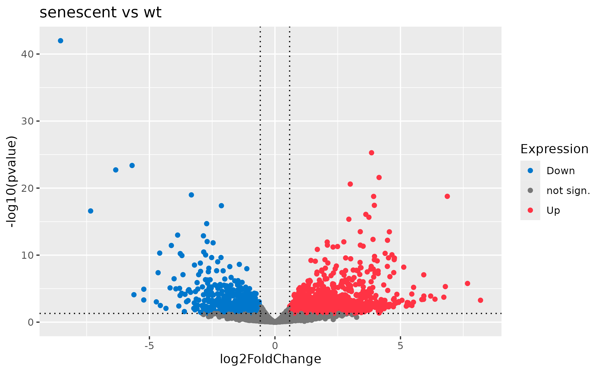

Interactive Data Visualization with R Shiny for Life Sciences
Day 1: ggplot2 recap
Michael Teske & Jonas Schmid, Zurich 08 April 2024grammar of graphics
Data
| Sepal.Length | Sepal.Width | Petal.Length | Petal.Width | Species |
| 5.1 | 3.5 | 1.4 | 0.2 | setosa |
| 4.9 | 3 | 1.4 | 0.2 | setosa |
| 4.7 | 3.2 | 1.3 | 0.2 | setosa |
| 4.6 | 3.1 | 1.5 | 0.2 | setosa |
| 5 | 3.6 | 1.4 | 0.2 | setosa |
| ... | ||||
Aesthetics
- X axis
- Y axis
- Point colour
- ...
Geometry
- Barplot
- Boxplot
- Scatterplot
- Lineplot
- ...
grammar of graphics
Data
| Sepal.Length | Sepal.Width | Petal.Length | Petal.Width | Species |
| 5.1 | 3.5 | 1.4 | 0.2 | setosa |
| 4.9 | 3 | 1.4 | 0.2 | setosa |
| 4.7 | 3.2 | 1.3 | 0.2 | setosa |
| 4.6 | 3.1 | 1.5 | 0.2 | setosa |
| 5 | 3.6 | 1.4 | 0.2 | setosa |
| ... | ||||
ggplot(data, aes(x=Petal.Length y=Petal.Width)) + geom_point(aes(color=Species))
grammar of graphics
- Package: library(ggplot2) OR library(tidyverse)
- Data: ggplot2 works with data frames, allowing you to map variables in your data to visual elements in your plot.
- Aesthetic Mapping: Aesthetic mappings define how variables in your dataset are mapped to visual properties of the plot, such as x and y axes, color, shape, size, etc.
- Geometric Objects (geoms): Geoms are the actual graphical representations of data points in your plot, such as points, lines, bars, and polygons.
- Layers: In ggplot2, plots are built up in layers, where each layer adds additional information to the plot. Layers typically consist of geoms (geometric objects) and stats (statistical transformations).
- Themes: Themes control the overall appearance of the plot, including axes, background, text, etc. ggplot2 provides several built-in themes, and you can customize themes to match your preferences or the requirements of your visualization.
Further Reading
Background
Resources

Let's create a plot!

Iris Dataset :: Violin Plot
data(iris)
ggplot(iris, aes(x=Species, y=Petal.Length)) +
geom_violin(aes(fill=Species)) +
geom_point() +
geom_boxplot(width=0.1)
Let's create a plot!

Iris Dataset :: Violin Plot
library(ggbeeswarm)
data(iris)
ggplot(iris, aes(x=Species, y=Petal.Length)) +
geom_violin(aes(fill=Species)) +
geom_quasirandom() +
geom_boxplot(width=0.1)
Let's create a plot! - Variant 2

Ruhland2016 Dataset :: Volcano Plot
# Load data
ruhland2016 <- read.csv('Ruhland2016.csv', row.names=1)
# Mark differentially expressed genes
log2FCthreshold <- log2(1.5)
p_threshold <- 0.05
ruhland2016$Expression <- 'not sign.'
ruhland2016$Expression[ruhland2016$log2FoldChange >= log2FCthreshold & ruhland2016$pval <= p_threshold] <- 'Up'
ruhland2016$Expression[ruhland2016$log2FoldChange <= -log2FCthreshold & ruhland2016$pval <= p_threshold] <- 'Down'
# Plot
ggplot(ruhland2016, aes(x=log2FoldChange, y=-log10(pvalue), col=Expression)) +
geom_point() +
geom_vline(
xintercept = c(-log2FCthreshold, log2FCthreshold),
linetype ='dotted'
) +
geom_hline(
yintercept = -log10(p_threshold),
linetype = 'dotted'
) +
ggtitle('senescent vs wt') +
# Optional
scale_colour_manual(values=c(
'not sign.' = '#777777',
'Up' = '#FF3344',
'Down' = '#0077CC'
))
Questions?
Exercise 2
Task: Create a plot with ggplot2!
Iris Dataset :: Violin Plot
library(tidyverse)
library(ggbeeswarm)
data(iris)
ggplot(iris, aes(x=..., y=...)) +
...
15 min

Ruhland 2016 RNA-seq :: Violin Plot
# Load data
ruhland2016 <- read.csv('Ruhland2016.csv', row.names=1)
# Mark differentially expressed genes - Wrap this part in a reactive({})
log2FCthreshold <- log2(1.5)
p_threshold <- 0.05
ruhland2016$Expression <- 'not sign.'
ruhland2016$Expression[ruhland2016$log2FoldChange >= log2FCthreshold & ruhland2016$pval <= p_threshold] <- 'Up'
ruhland2016$Expression[ruhland2016$log2FoldChange <= -log2FCthreshold & ruhland2016$pval <= p_threshold] <- 'Down'
...